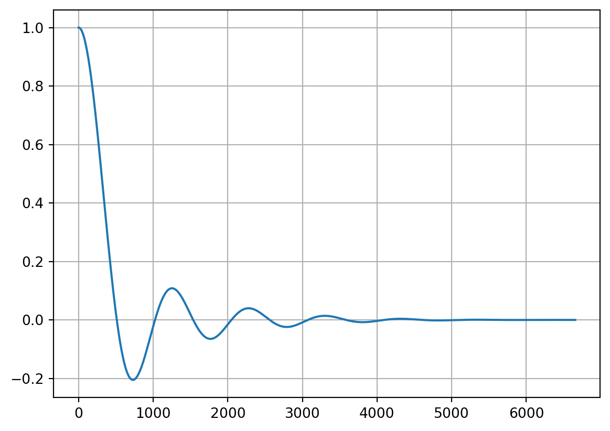
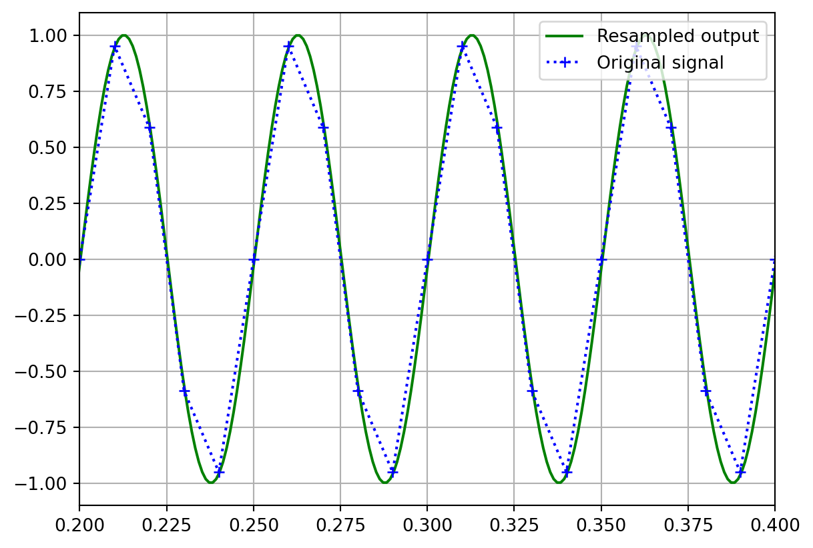
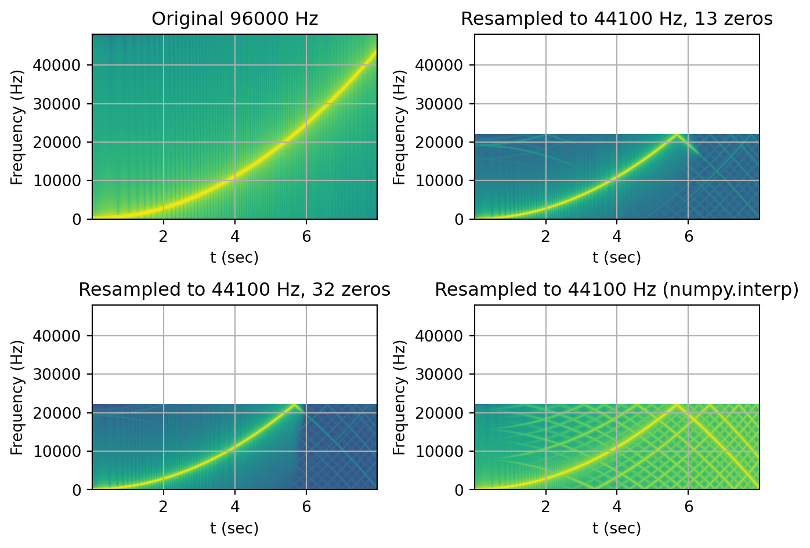
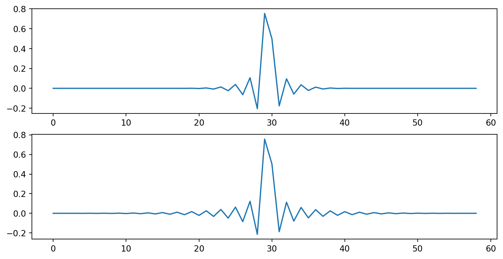
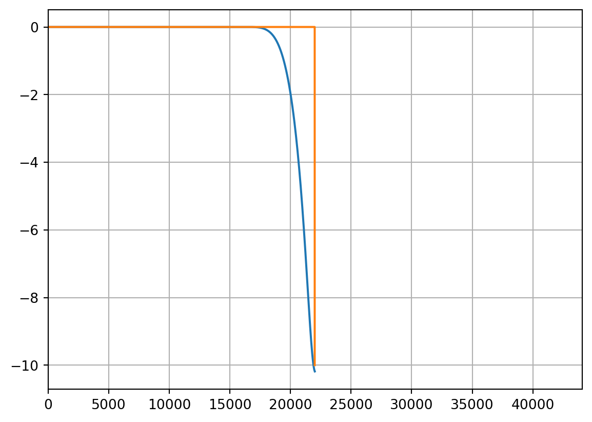

Show the code
import numpy as np
import matplotlib.pyplot as plt
from scipy.special import sinc
from scipy.signal.windows import kaiser
from scipy import signal
from math import ceilSeptember 16, 2023
While there is a lot of theoritical explanation of the sinc resampling algorithm on the internet, there is unfortunately not a lot of simple practical examples as the implementation are usually heavily optimized and designed to support real-time scenario. This article will try to provide a simple implementation of the algorithm based on the CCRMA description article. You can find a plain Python script containing the code used in this article here.
First, let’s get our python imports out of the way.
Let’s define a function that will build our sinc table for us. The sinc table will only contain the “right-wing” of the symmetric FIR filter. This function will also return a table of differences between successive FIR samples which will be useful to speed up our linear interpolation later on.
def build_sinc_table(num_zeros, samples_per_crossing):
SINC_SIZE_ = num_zeros * samples_per_crossing
KAISER_BETA = 10
x = np.linspace(-num_zeros, num_zeros, SINC_SIZE_ * 2 + 1)
y = sinc(x)
window = kaiser(len(y), KAISER_BETA)
y = np.multiply(y, window)
h = y[SINC_SIZE_:]
h_diff = np.subtract(h[1:], h[:-1])
h_diff = np.append(h_diff, 0)
return h, h_diffAnd here’s what our table looks like:

We can now implement the main algorithm as described here.
def sinc_resample(x, ratio, h, h_diff, samples_per_crossing):
time_step = 1 / ratio
filter_scale = min(1, ratio)
filter_step = samples_per_crossing * filter_scale
output = np.ndarray(shape=ceil(len(x) * ratio))
out_idx = 0
t = 0
while t < len(x):
acc = 0
integer_part = int(t)
fractional_part = t - integer_part
# Compute left wing
filter_offset = filter_step * fractional_part
left_coeff_count = int((len(h) - filter_offset) / filter_step)
left_coeff_count = min(integer_part, left_coeff_count) # avoid underflow access
for i in range(-left_coeff_count, 1):
filter_idx = filter_offset + filter_step * abs(i)
fraction = filter_idx - int(filter_idx)
filter_idx = int(filter_idx)
weight = h[filter_idx] + fraction * h_diff[filter_idx]
acc += x[integer_part + i] * weight
# compute right wing
fractional_part = 1 - fractional_part
filter_offset = filter_step * fractional_part
right_coeff_count = int((len(h) - filter_offset) / filter_step)
right_coeff_count = min(len(x) - integer_part - 1, right_coeff_count) # avoid overflow access
for i in range(0, right_coeff_count):
filter_idx = filter_offset + filter_step * i
fraction = filter_idx - int(filter_idx)
filter_idx = int(filter_idx)
weight = h[filter_idx] + fraction * h_diff[filter_idx]
acc += x[integer_part + 1 + i] * weight
if out_idx < len(output):
output[out_idx] = acc
out_idx += 1
t += time_step
return outputHere’s an example of the implementation at work where we will upsample a simple sine wave. The blue dotted line on the graph effectively shows what we would have obtained using a linear interpolation method instead.
# Number of zeros crossing
NZ = 13
# Number of samples per zero crossing.
# Higher sample count means better precision for our interpolation at the cost of more memory usage.
SAMPLES_PER_CROSSING = 128
h, h_diff = build_sinc_table(NZ, SAMPLES_PER_CROSSING)
ORIGINAL_FS = 100
SIGNAL_FREQUENCY = 20
TARGET_FS = 1000
time = np.linspace(0, 1, ORIGINAL_FS, endpoint=False)
in_sine = np.sin(2 * np.pi * time * SIGNAL_FREQUENCY)
output = sinc_resample(in_sine, TARGET_FS / ORIGINAL_FS, h, h_diff, SAMPLES_PER_CROSSING)
out_time = np.linspace(0, 1, TARGET_FS)
plt.plot(out_time, output, 'g', label="Resampled output")
plt.plot(time, in_sine, 'b+:', label="Original signal")
plt.xlim(0.2, 0.4)
plt.ylim(-1.1, 1.1)
plt.grid()
plt.legend(loc="upper right")
plt.show()
We are now ready to perform our benchmark test. Inspired by the Infinite Wave methodology, we will try to downsample a quadratic chirp signal from 96kHz to 44.1kHz.
We will now resample that signal in 3 different ways. First, we’ll use our sinc_resample method with a sinc table containing 13 zero crossings and then again with a table containing 32 zero crossings. This should allow us to see how the number of zero crossing in our table affects the lowpass filtering of our implementation. Lastly, we will use numpy to resample the signal using linear interpolation so that we can compare our algorithm against a fast common resampling method.
TARGET_FS = 44100
RESAMPLING_RATIO = TARGET_FS / ORIGINAL_FS
nz_1 = 13
SAMPLES_PER_CROSSING = 128
h, h_diff = build_sinc_table(nz_1, SAMPLES_PER_CROSSING)
out_sinc_1 = sinc_resample(
in_chirp,
RESAMPLING_RATIO,
h,
h_diff,
SAMPLES_PER_CROSSING)
nz_2 = 32
SAMPLES_PER_CROSSING = 512
h, h_diff = build_sinc_table(nz_2, SAMPLES_PER_CROSSING)
out_sinc_2 = sinc_resample(
in_chirp,
RESAMPLING_RATIO,
h,
h_diff,
SAMPLES_PER_CROSSING)
out_time = np.linspace(0, CHIRP_LENGTH_SECONDS, TARGET_FS*CHIRP_LENGTH_SECONDS)
out_linear = np.interp(out_time, time, in_chirp)
def plot_spectrogram(title, w, fs, ax = None):
if ax is None:
fig, ax = plt.subplots()
plt.specgram(w, Fs=fs, mode='magnitude')
ax.set_title(title)
ax.set_xlabel('t (sec)')
ax.set_ylabel('Frequency (Hz)')
ax.set_ylim(0, ORIGINAL_FS/2)
ax.grid(True)
fig = plt.figure(1)
ax1 = plt.subplot(221)
plot_spectrogram(f"Original {ORIGINAL_FS} Hz", in_chirp, ORIGINAL_FS, ax1)
ax2 = plt.subplot(222)
plot_spectrogram(f"Resampled to {TARGET_FS} Hz, {nz_1} zeros", out_sinc_1, TARGET_FS, ax2)
ax2 = plt.subplot(223)
plot_spectrogram(f"Resampled to {TARGET_FS} Hz, {nz_2} zeros", out_sinc_2, TARGET_FS, ax2)
ax3 = plt.subplot(224)
plot_spectrogram(f"Resampled to {TARGET_FS} Hz (numpy.interp)", out_linear, TARGET_FS, ax3)
fig.tight_layout(pad=1.0)
plt.show()/Library/Frameworks/Python.framework/Versions/3.11/lib/python3.11/site-packages/matplotlib/axes/_axes.py:7775: RuntimeWarning: divide by zero encountered in log10
Z = 20. * np.log10(spec)
First, we can immediately notice that the resampled output lost all content above the Nyquist frequency. This explains why half the spectrogram is empty. The downward line(s) around the 6-second mark is the higher frequency content present in the original file that is now folding around Nyquist. This is called aliasing. We can also see how the resampling done with 32 zeros shows slightly less aliasing than the 13 zeros resampling.
Finally, we can look at the impulse and frequency response of our resampler:
ORIGINAL_FS = 96000
TARGET_FS = 44100
RESAMPLING_RATIO = TARGET_FS / ORIGINAL_FS
IMPULSE_LENGTH = 128
impulse = np.zeros(IMPULSE_LENGTH)
impulse[round(IMPULSE_LENGTH/2)] = 1
nz_1 = 13
SAMPLES_PER_CROSSING = 512
h, h_diff = build_sinc_table(nz_1, SAMPLES_PER_CROSSING)
out_imp_1 = sinc_resample(
impulse,
RESAMPLING_RATIO,
h,
h_diff,
SAMPLES_PER_CROSSING)
nz_2 = 32
SAMPLES_PER_CROSSING = 512
h, h_diff = build_sinc_table(nz_2, SAMPLES_PER_CROSSING)
out_imp_2 = sinc_resample(
impulse,
RESAMPLING_RATIO,
h,
h_diff,
SAMPLES_PER_CROSSING)
fig = plt.figure(2)
fig.set_figwidth(10)
plt.subplot(211)
plt.plot(out_imp_1)
plt.subplot(212)
plt.plot(out_imp_2)
from scipy import fft
NFFT = 1024
impulse_fft = fft.fft(out_imp_1, NFFT)
impulse_fft = fft.fftshift(impulse_fft)
fft_db = 20 * np.log10(np.abs(impulse_fft))
xf = fft.fftfreq(NFFT, 1/TARGET_FS)
xf = fft.fftshift(xf)
plt.figure(3)
plt.plot(xf, fft_db)
plt.xlim(0, TARGET_FS)
plt.grid()
# Ideal filter
ideal_x = np.zeros(22000)
ideal_x[-1] = -10
plt.plot(ideal_x)